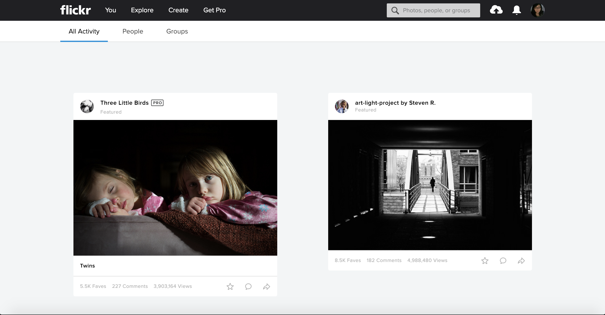

Photomatic

Overview
About Project
A photo sharing web app that allows users to upload, display, comment and like photos. This was a collaborative project that me and my teammates created at New York Code + Design Academy.Duration
July 2017 (3 weeks)Team
Jane Park, Dave Noriega, Justin LoffredoMy Role
UX Designer
Comparative Analysis
User Flow
User Testing
Front-End Developer
Research
Comparative Analysis
To get started with this project, we observed other photo sharing sites such as Photobucket, Flickr, and Instagram.
Images of Photobucket's Interface

Images of Flickr's Interface

We took certain elements that were useful to develop our photo app. Such as adding a menu bar
to display the functional elements such as Photo Gallery, Upload, and Sign Out.
User Flow
After observing other resources, I started mapping out the layout of each screen. It helped me regulate the layout of the app. My goal was to create a simple and easy navigation for users to upload and browse photos.
Visual Design and Development
Observing some of the interfaces on the other photo apps, I've implemented a CSS Boilerplate, Skeleton. I created a simple landing page with the contents of photos in the background. Once the user signs for a new account or log's in, they are able to access the gallery page shared by other users. The menu bar provides the user's navigation through the app to have them go to the photo gallery, upload photos and sign out of the page.User Testing
A few user testings (that were conducted) liked the simple and clean layout of the app. The user tasks that were conducted (uploading photos, viewing photos, delete photos, like photos, comment on photos) were easy to navigate.
Take Aways and Improvements
For an MVP, I feel that me and my team accomplished our goal to create a photo sharing app that features upload, comment photos, like photos, and delete photos. For an improvement, I would like to fine tune the layout and design, as of right now, the website is not entirely responsive and would like to try to clean it up so it can be viewed on mobile or tablets. I would like to eventually, update from using Skeleton to Bootstrap to implement the responsive design.- Shop WIBO Staff Dashboard
- Punch Up
- Ouchie
- Photomatic
- Femme Tech